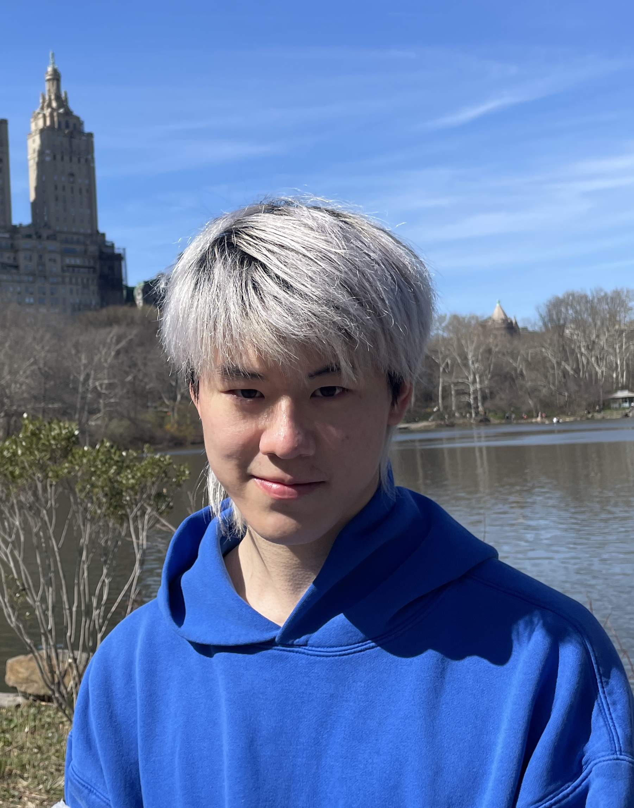
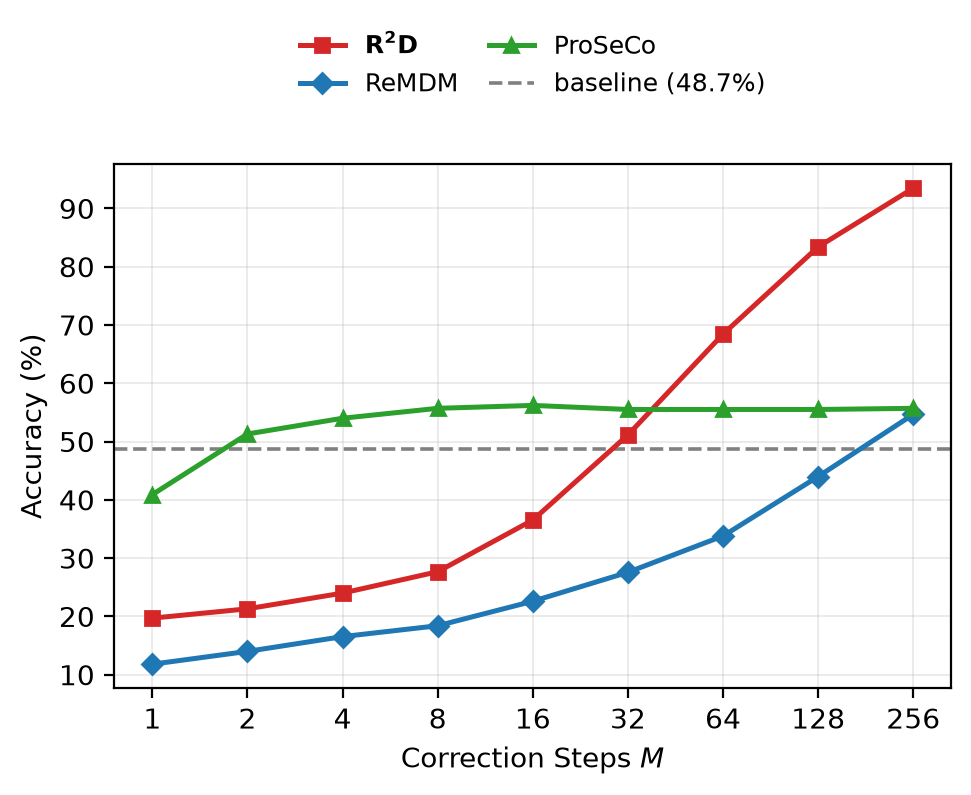
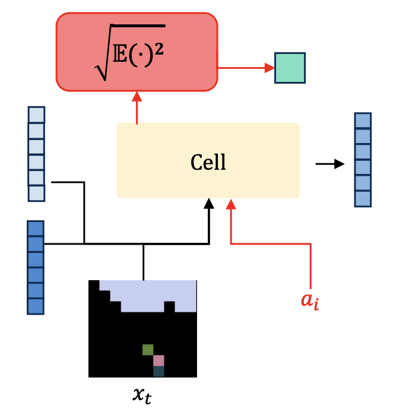

|
Frank Wu
I'm a Master's student in Machine Learning at Carnegie Mellon University. I'm interested in exploring emerging paradigms for training neural networks, with an emphasis on reinforcement learning, continual
learning, and generalization.
Previously, I was a Machine Learning Engineer at Alibaba Group, where I built action recognition models and visual search engines serving 50M+ daily active users. I received my B.A. in Computer Science & Mathematics from New York University.
Email /
LinkedIn /
Scholar /
Github /
X
|

|
- Oct 2026: New preprint on scaling masked diffusion inference with random remasking!
- Oct 2025: Our paper on local reinforcement learning accepted to ICLR 2026!
- Aug 2025: Started my Master's program in Machine Learning at Carnegie Mellon University.
- Jun 2024: Graduated from New York University with B.A. in Computer Science & Mathematics.
|
|

|
Random Remasking Scales Masked Diffusion Inference
Zhaoyi Zhou, Frank Wu, Andrea Zanette
arXiv preprint, 2026
arXiv
We introduce Random Remask-Denoise (R2D), a finetuning- and reward-free test-time procedure, and Trajectory Correction Training, achieving near-log-linear inference scaling and strong gains on Sudoku, 3-SAT, and HumanEval+.
|
|

|
Local Reinforcement Learning with Action-Conditioned Root Mean Squared Q-Functions
Frank Wu, Mengye Ren
International Conference on Learning Representations (ICLR), 2026
website
/
arXiv
/
code
We propose ARQ, which unifies Forward-Forward learning with TD updates for fully local reinforcement learning using action-conditioned, vector-valued value functions; we achieve 50% average return improvement and match backprop-based baselines on MinAtar and DeepMind Control Suite.
|
|